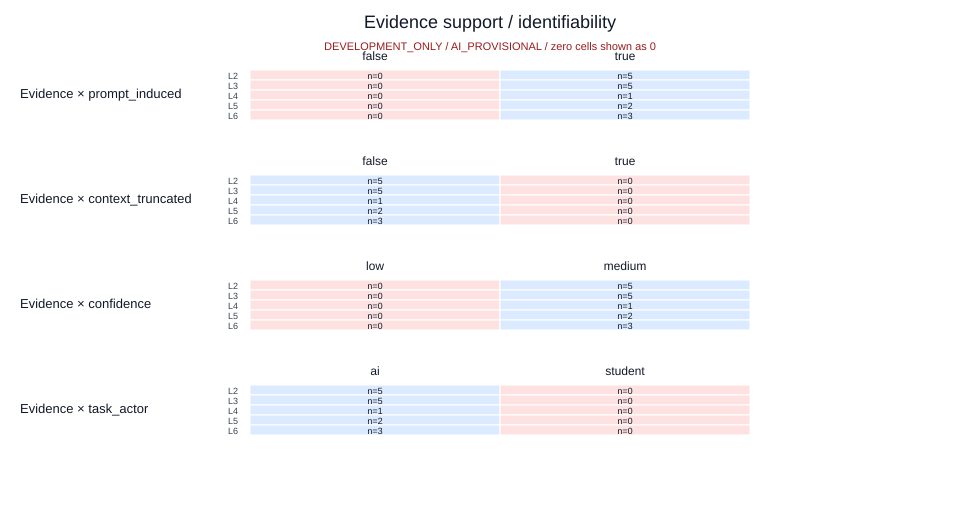
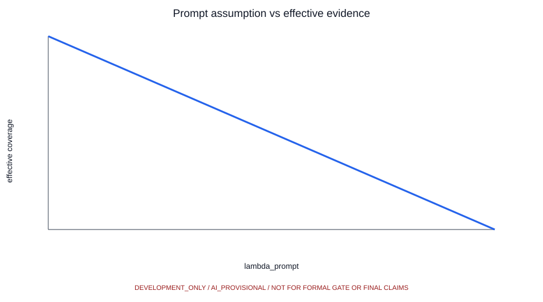
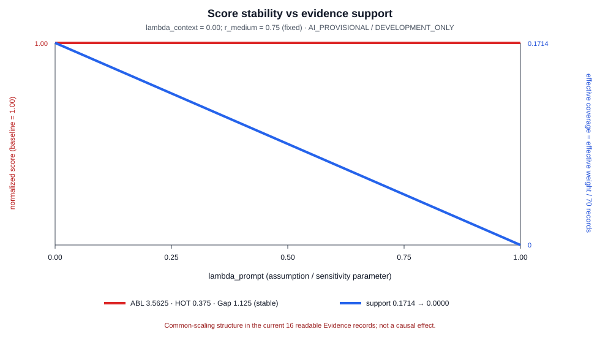
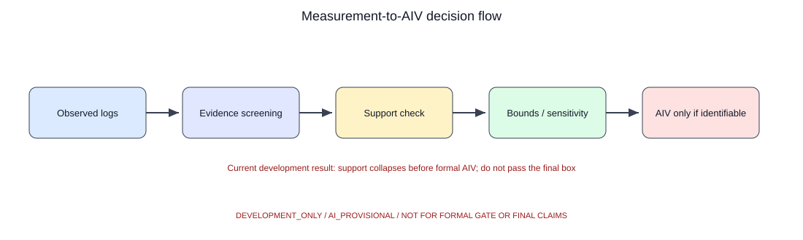

Evidence Reliability：Partial Identification / Bounds
把“分数是否稳定”和“支撑分数的有效证据是否足够”分开观察。
Panel A · Evidence Overview
Raw records
—
Interpretable Evidence
—
Effective Evidence
—
数据源：— 状态：—
流程：Observed Logs → Evidence Screening → Support Check → Bounds / Sensitivity → AIV only if identifiable
流程：Observed Logs → Evidence Screening → Support Check → Bounds / Sensitivity → AIV only if identifiable
Panel B · Assumption Controls
Panel C · Score vs Support
DEFINED
—
ABL (Score)
—
HOT (Score)
—
Gap (Score)
—
Effective weight
—
Coverage / 70 records
—
Evidence Support = effective weight / 70 development records
Panel D · Interpretation
—
Core figures



